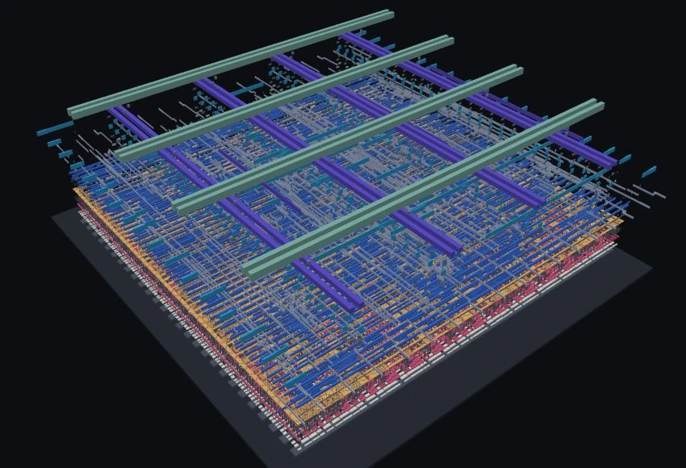

GEMM32 ASIC
Hierarchical SKY130 implementation of a 32×32 INT8 matrix accelerator, from RTL to a routed layout and sign-off checks.
- 50 MHz
- v1 sign-off · TT
- 112
- row and SRAM macros
- 102.4
- peak GOPS at 50 MHz
My contribution
In a team of two, I ran and documented the hierarchical flow, automated preflight and sign-off evidence with Bash and Python, and checked gate-level results against RTL and Python for three matrix shapes. The v1 flow reported clean LVS, zero antenna violations and positive setup and hold slack at TT.